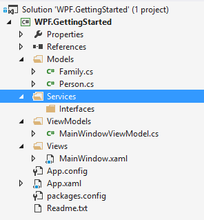

In this step we will create services that will serialize the models from/to disk. Services are a great way to abstract functionality that can be used in every part of the application. This guide will also register the service in the ServiceLocator so it can be injected in view models.
Creating the service definition
The first thing to do is to create the Services folder to group the services. Below is a screenshot of how to solution will look after creating the folders:

Then add a new interface to the Interfaces folder named IFamilyService. This will manage the families that are avaiable. Below is the interface defined:
namespace WPF.GettingStarted.Services
{
using WPF.GettingStarted.Models;
public interface IFamilyService
{
IEnumerable<Family> LoadFamilies();
void SaveFamilies(IEnumerable<Family> families);
}
}
Creating the service implementation
Below is the implementation of the service which will actually take care of saving and loading of the families:
namespace WPF.GettingStarted.Services
{
using System.Collections.Generic;
using System.IO;
using Catel.Collections;
using Catel.Data;
using WPF.GettingStarted.Models;
public class FamilyService : IFamilyService
{
private readonly string _path;
private readonly IXmlSerializer _xmlSerializer;
public FamilyService(IXmlSerializer xmlSerializer)
{
Argument.IsNotNull(() => xmlSerializer);
_xmlSerializer = xmlSerializer;
string directory = Catel.IO.Path.GetApplicationDataDirectory("CatenaLogic", "WPF.GettingStarted");
_path = Path.Combine(directory, "family.xml");
}
public IEnumerable<Family> LoadFamilies()
{
if (!File.Exists(_path))
{
return new Family[] { };
}
using (var fileStream = File.Open(_path, FileMode.Open))
{
var settings = _xmlSerializer.Deserialize<Settings>(fileStream);
return settings.Families;
}
}
public void SaveFamilies(IEnumerable<Family> families)
{
var settings = new Settings();
settings.Families.ReplaceRange(families);
using (var fileStream = File.Open(_path, FileMode.Create))
{
_xmlSerializer.Serialize(settings, fileStream);
}
}
}
}
Registering the service in the ServiceLocator
Now we have created the service, it is time to register it in the ServiceLocator. In the App.xaml.cs, add the following code:
var serviceLocator = ServiceLocator.Default;
serviceLocator.RegisterType<IFamilyService, FamilyService>();
Adding the service usage to the MainWindowViewModel
Now the service is registered, it can be used anywhere in the application. A great place to load and save the families is in the MainWindowViewModel which contains all the logic of the main application window.Â
Injecting the service via dependency injection
To get an instance of the service in the view model, change the constructor to the following definition.
private readonly IFamilyService _familyService;
/// <summary>
/// Initializes a new instance of the <see cref="MainWindowViewModel"/> class.
/// </summary>
public MainWindowViewModel(IFamilyService familyService)
{
Argument.IsNotNull(() => familyService);
_familyService = familyService;
}
As you can see in the code above, a new field is created to store the dependency IFamilyService. Then the constructor ensures that the argument is not null and stores it in the field.
Creating the Families property on the MainWindowViewModel
The next thing we need is a Families property on the MainWindowViewModel to store the families in we load from disk. Below is the property definition for that:
/// <summary>
/// Gets the families.
/// </summary>
public ObservableCollection<Family> Families
{
get { return GetValue<ObservableCollection<Family>>(FamiliesProperty); }
private set { SetValue(FamiliesProperty, value); }
}
/// <summary>
/// Register the Families property so it is known in the class.
/// </summary>
public static readonly PropertyData FamiliesProperty = RegisterProperty("Families", typeof(ObservableCollection<Family>), null);
Loading the families at startup
Now we have the IFamilyService and the Families property, it is time to combine these two. To do this, we need to override the InitializeAsync method on the view model which is automatically called as soon as the view is loaded by Catel:
protected override async Task InitializeAsync()
{
var families = _familyService.LoadFamilies();
Families = new ObservableCollection<Family>(families);
}
Saving the families at shutdown
To save the families at shutdown, override the CloseAsync method on the view model which is automatically called as soon as the view is closed by Catel:
protected override async Task CloseAsync()
{
_familyService.SaveFamilies(Families);
}
After running the application once, a new file will be stored in the following directory:
C:\Users\[yourusername]\AppData\Roaming\CatenaLogic\WPF.GettingStarted
Up next
[Creating the view models]({{< relref "getting-started/wpf/creating-the-view-models.md" >}})